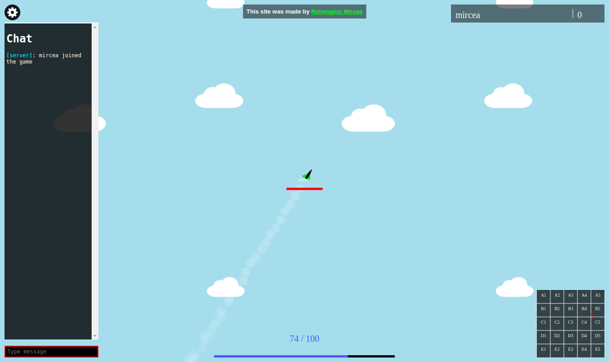

Airborne documentation
General description
Link to game here.
Airborne is a multiplayer game in which you fly plane and your goal is to shoot down as many enemies.
Each plane down gives you 15 points. When you are killed you lose all your points.
Framework
The server is made using Node.js with static files served by express and server-to-client comunication handled
by socket.io. The executables in the private game hosting section are compiled with the help of nexe. The server
is hosted by Heroku whitch is onw of the only free Node.js hosting platforms.
The web page is made using direct HTML coding (no intermediary such as wikilang). Graphics are made using the
HTML canvas, controled by JavaScript.
The server handles events at 25fps and the airborne web page renders at the same speed. It is't yet implemented
in the user interface but the framerate can be changed from your browser's JavaScript console like below.
> FPS = 15;
Controls
| Key | Action |
|---|
| Space | shoots a bullet |
| R | reloads amunition |
| Tab | toggles chat |
| Enter | Sends chat message |
Interface
| Utility | Location | Purpose |
|---|
| Leaderboard | top-right | shows top 10 players |
| Minimap | lower-right | shows all player's locations in the arena |
| Chat | left | for sending and viewing messages |
All these (and the credits linking to my website) can be toggled in the settings section in the top-left
Private game hosting
- You can download a executable whitch, when run, makes your computer a full airborne server
- It will print on the screen the ip's whitch you will need to send your friends for them to join
- The program will print events such as a device connecting or deconnecting from the server
- You will also need to download a zip file containning the dependencies for the program (such as images, webpages etc.)
Restrictions
- Doesn't work on mobile
- It can lag when many players join
Vulnerabilities
- messages aren't yet protected against cross-site scripting atacks. Try typing <b>XSS</b>
- Going into the arena border at the same time you exit the game may crash the server, which has to be manualy redeployed.
Screenshots
main page:

mid-air:
